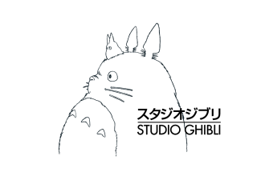

STUDIO GHIBLI
Pendirian
Studio GhibliStudio Ghibli, Inc. adalah sebuah studio film animasi yang berbasis di Koganei, Tokyo, Jepang. Film-film animenya mengandung unsur-unsur provokatif, imajinatif, emosional, dan telah mendapatkan pujian yang luas dari seluruh dunia. didirikan pada 15 Juni 1985 oleh Hayao Miyazaki dan Isao Takahata. Sebelum pendiriannya, keduanya sudah bekerja sama dalam beberapa proyek di perusahaan animasi lain, termasuk pada film Nausicaä of the Valley of the Wind (1984). Keberhasilan Nausicaä memberikan mereka kepercayaan diri dan sumber daya untuk mendirikan studio mereka sendiri.
Awalnya, Studio Ghibli bukanlah studio besar seperti yang kita kenal sekarang. Mereka memulai dengan tim yang relatif kecil, berfokus pada pembuatan film animasi berkualitas tinggi dengan cerita dan visual yang kuat. Studio ini dibangun di atas prinsip-prinsip kreatif Miyazaki dan Takahata, yang menekankan pentingnya cerita yang mendalam, karakter yang kompleks, dan animasi yang detail.
Selama bertahun-tahun, Studio Ghibli menghasilkan berbagai film animasi yang sangat sukses secara kritis dan komersial, seperti My Neighbor Totoro, Kiki's Delivery Service, Princess Mononoke, dan Spirited Away. Film-film mereka mendapatkan pengakuan internasional, memenangkan berbagai penghargaan, dan mendapatkan basis penggemar yang besar di seluruh dunia.
Meskipun mengalami perubahan kepemimpinan dan tantangan industri, Studio Ghibli mempertahankan reputasinya sebagai salah satu studio animasi paling terkenal dan dihormati di dunia, terus menghasilkan karya-karya yang berkesan dan berpengaruh. Studio ini telah menjadi simbol dari animasi Jepang berkualitas tinggi dan telah menginspirasi banyak animator di seluruh dunia.
Perkembangan
- Fase Awal (1985-1990an): Pendirian dan Pengakuan Awal
- Pendirian (1985): Studio Ghibli didirikan oleh Hayao Miyazaki dan Isao Takahata setelah kesuksesan Nausicaä of the Valley of the Wind. Awalnya, studio ini berfokus pada produksi film fitur dan relatif kecil.
- Kesuksesan Awal (akhir 1980an - awal 1990an): Film-film seperti My Neighbor Totoro (1988),
- Fase Ekspansi dan Pengakuan Internasional (1990an - 2000an):
- Sukses Global (pertengahan 1990an - 2000an): Film-film seperti Princess Mononoke (1997) dan Spirited Away (2001) membawa Studio Ghibli ke panggung dunia. Spirited Away memenangkan Academy Award untuk Best Animated Feature, menandai pencapaian besar bagi animasi Jepang dan Studio Ghibli.
- Keragaman Kreatif: Studio ini terus bereksperimen dengan berbagai gaya dan tema, menampilkan karya dari sutradara selain Miyazaki dan Takahata, seperti Pom Poko (1994) dan Whisper of the Heart (1995).
- Pertumbuhan dan Pengakuan: Studio Ghibli mengalami pertumbuhan signifikan dalam hal staf, anggaran, dan jangkauan global.
- Fase Transisi dan Masa Depan (2010an - Sekarang):
- Penghentian Produksi Sementara (2014): Studio Ghibli mengumumkan penghentian produksi film fitur untuk sementara waktu, menimbulkan spekulasi tentang masa depan studio.
- Kembalinya Miyazaki (2016): Hayao Miyazaki kembali dari pensiun untuk mengerjakan film How Do You Live? (2023), menunjukkan komitmen berkelanjutannya terhadap animasi.
- Perubahan Kepemimpinan dan Strategi: Studio Ghibli mengalami perubahan kepemimpinan dan strategi, beradaptasi dengan perubahan lanskap industri animasi.
- Ekspansi ke Media Lain: Studio Ghibli mulai mengeksplorasi peluang di luar film fitur, termasuk produksi serial televisi dan pengembangan taman hiburan.
- Perilisan Film Baru dan Adaptasi: Dengan perilisan How Do You Live? dan rencana untuk adaptasi karya-karya lain, Studio Ghibli menunjukkan komitmen untuk terus berkarya dan menjangkau audiens baru.
Studio Ghibli terus berevolusi, beradaptasi dengan perubahan teknologi dan tren industri, sambil tetap mempertahankan komitmen terhadap kualitas dan cerita yang mendalam yang menjadi ciri khasnya. Masa depannya masih belum pasti, tetapi warisan dan pengaruhnya terhadap dunia animasi tetap tak terbantahkan.
Karakteristik Utama
1. Keunggulan Artistik: Film-film Studio Ghibli menampilkan animasi yang digambar tangan dengan perhatian luar biasa terhadap detail dan lanskap yang hidup.
2. Cerita yang Kaya: Narasi sering kali menggabungkan fantasi dan realitas, dengan karakter yang kompleks dan tema universal yang menarik bagi anak-anak maupun orang dewasa.
3. Tema: Tema yang sering muncul meliputi pentingnya alam, nilai keberanian dan kebaikan, perjuangan dalam masa pertumbuhan, serta kritik terhadap industrialisasi.
4. Film Ikonik:


-
Pengaruh pada Animasi:
- Kualitas Animasi: Studio Ghibli menetapkan standar baru untuk kualitas animasi, dengan detail yang luar biasa, latar belakang yang indah, dan desain karakter yang ikonik. Banyak animator di seluruh dunia terinspirasi oleh gaya visual dan teknik animasi mereka.
- Cerita yang Mendalam: Film-film Ghibli dikenal karena cerita-cerita yang kompleks, berlapis, dan penuh emosi, yang seringkali membahas tema-tema universal seperti lingkungan, keluarga, pertumbuhan, dan identitas. Hal ini mendorong perkembangan cerita yang lebih kompleks dan bermakna dalam animasi.
- Karakter yang Kompleks: Karakter-karakter dalam film Ghibli bukanlah karakter yang sederhana; mereka memiliki kedalaman emosional, kelemahan, dan kekuatan, yang membuat mereka relatable dan berkesan bagi penonton. Ini mempengaruhi bagaimana karakter dalam animasi modern dirancang dan dikembangkan.
-
Pengaruh pada Budaya Populer:
- Ikon Global: Karakter-karakter seperti Totoro, Kiki, dan Chihiro (dari *Spirited Away*) telah menjadi ikon budaya populer global, muncul dalam berbagai produk, merchandise, dan karya seni penggemar.
- Pengaruh Estetika: Gaya visual Studio Ghibli yang unik telah mempengaruhi desain, ilustrasi, dan seni secara umum, menginspirasi banyak seniman dan desainer.
- Pengaruh pada Film Animasi Barat: Studio Ghibli telah memberikan pengaruh besar pada film animasi Barat, mendorong peningkatan kualitas cerita dan animasi, dan menunjukkan potensi film animasi untuk audiens yang lebih luas.
-
Warisan:
- Warisan Artistik: Film-film Studio Ghibli merupakan karya seni yang abadi, yang akan terus dinikmati dan dipelajari oleh generasi mendatang. Mereka mewakili puncak pencapaian dalam animasi.
- Warisan Budaya: Film-film Ghibli telah berkontribusi pada pemahaman dan apresiasi budaya Jepang di seluruh dunia, menampilkan aspek-aspek unik dari budaya dan sejarah Jepang.
- Warisan Inspiratif: Cerita-cerita Studio Ghibli yang penuh inspirasi, mengajarkan nilai-nilai penting seperti keberanian, persahabatan, dan pentingnya menghargai alam, akan terus menginspirasi penonton dari berbagai usia dan latar belakang.
-
Dampak yang Berkelanjutan:
- Generasi Animator Baru: Studio Ghibli telah melahirkan dan menginspirasi banyak animator muda, yang terus meneruskan warisan dan gaya animasi yang unik.
- Ekspansi ke Media Lain: Pengaruh Studio Ghibli meluas ke berbagai media, termasuk buku, video game, dan taman hiburan, menunjukkan daya tahan dan popularitasnya yang terus-menerus.
Pengaruh | Warisan | Dampak
Singkatnya, Studio Ghibli telah meninggalkan warisan yang tak ternilai dalam dunia animasi dan budaya populer. Pengaruhnya pada kualitas animasi, storytelling, dan desain karakter terus terasa hingga saat ini, dan film-filmnya akan terus dinikmati dan dihargai oleh generasi mendatang.